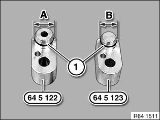
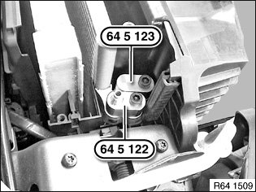
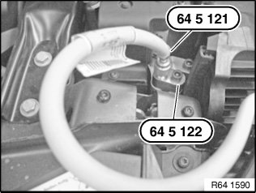

<!DOCTYPE html>
<html>
  <head>
    <title>64 51 ... Leak-Testing Condenser — 2011 BMW 128i Coupe (E82) L6-3.0L (N52K) Service Manual | Operation CHARM</title>
    <meta name='description' content="Detailed repair manual for the 2011 BMW 128i Coupe (E82) L6-3.0L (N52K).">
    <link rel='stylesheet' href="../style.css">
    <meta name='viewport' content='width=device-width, initial-scale=1.0' />
  </head>
  <body>
    <div class='theme-colors header'>
      <div class='branding'><b>Operation CHARM</b>: Car repair manuals for everyone.</div>
<div class=breadcrumbs><a class='breadcrumb-part' href="../">Home</a> <b>&gt;&gt;</b> <a class='breadcrumb-part' href="../BMW/">BMW</a> <b>&gt;&gt;</b> <a class='breadcrumb-part' href="../BMW/2011/">2011</a> <b>&gt;&gt;</b> <a class='breadcrumb-part' href="../index.html">128i Coupe (E82) L6-3.0L (N52K)</a> <b>&gt;&gt;</b> <a class='breadcrumb-part' href="0.html">Repair and Diagnosis</a> <b>&gt;&gt;</b> <a class='breadcrumb-part' href="0.html#Heating%20and%20Air%20Conditioning/">Heating and Air Conditioning</a> <b>&gt;&gt;</b> <a class='breadcrumb-part' href="0.html#Heating%20and%20Air%20Conditioning/Testing%20and%20Inspection/">Testing and Inspection</a> <b>&gt;&gt;</b> <a class='breadcrumb-part' href="2001.html">64 51 ... Leak-Testing Condenser</a></div></div>
<div class="theme-colors floaty-message lemon-message">
  <b style="font-size: 1.5em; color: gold">Manuals through 2025 now available!</b>
  <br><br>
  Our trusted friends have launched a new website named LEMON, which has newer manuals. It also contains all the CHARM manuals.
  <br><br>
  LEMON is the spiritual successor to  CHARM, I recommend you try it!
  <br><br>
  Link: <a style='white-space: nowrap' href="../missing-page">lemon-manuals.la</a> or <a style='white-space: nowrap' href="../missing-page">lemon-manuals.org.ua</a>
  <br><br>
  (Some people have issue connecting. LEMON is investigating. For now, use Firefox or change your DNS server)
  <br><br>
  Or, hide this message: <a href="../missing-page">temporarily</a> or <a href="../missing-page">permanently</a>
</div>
<div class='main'>
<h1>64 51 ... Leak-Testing Condenser</h1><br><br><b>64 51 ... Leak-testing Condenser</b><br><br><b>Special tools required:</b><br><br><br><div class='oxe-image'></div><br><br><br><br><br><b>WARNING:</b><br>Risk of injury.<br><a href="141.html">Refrigerant</a> circuit is under high pressure.<br>Follow safety instructions for handling <a href="141.html">refrigerant</a>.<br>Comply with the standard national safety instructions and precautions on handling nitrogen.<br>Ensure that employees are advised of how to handle pressurized vessels and nitrogen correctly (danger of asphyxiation). For this purpose, follow the notes and instructions in the technical safety specifications available from the gas supplier.<br><br><br><div class='oxe-image'></div><br><br><br><br><br><b>Necessary preliminary tasks:</b><br><span class='indent-2'>&#09;</span>-<span class='indent-5'>&#09;</span>Drain off air conditioning system<br><span class='indent-2'>&#09;</span>-<span class='indent-5'>&#09;</span>Detach refrigerant lines from condenser<br><span class='indent-5'>&#09;</span>Tightening torque 64 53 6AZ.<br><span class='indent-5'>&#09;</span>E70 only:<br><span class='indent-5'>&#09;</span>Tightening torque 64 53 3AZ.<br><br><br><div class='oxe-image'></div><br><br><br><br><br><b>IMPORTANT:</b><br>Risk of damage.<br>Special tool 64 5 122 and special tool 64 5 123 have different diameters (A, B) at the seal plugs.<br>Ensure correct connection assignment on condenser.<br><br><br><div class='oxe-image'></div><br><br><br><br><br>Fit and secure sealing adapter 64 5 123 to connection of low-pressure line.<br>Fit and secure test adapter 64 5 122 to connection of high-pressure line.<br>Tightening torque 64 53 6AZ.<br><br>E70 only:<br>Tightening torque 64 53 3AZ.<br><br><br><div class='oxe-image'></div><br><br><br><br><br>Connect special tool 64 5 122 to special tool 64 5 121.<br><br><br><div class='oxe-image'></div><br><br><br><br><br><b>IMPORTANT:</b><br>Risk of damage: Use only nitrogen pressure bottles with pressure reducers for leak-testing.<br>Pressurize condenser to 10 bar slowly only. Excessively fast pressurization and pressures in excess of 20 bar may cause damage to the condenser.<br><br><br><div class='oxe-image'></div><br><br><br><br><br>Connect nitrogen pressure bottle with pressure reducer to pressure gauge and then connect to special tool 64 5 121 (connecting hose).<br><br><b>NOTE:</b><br><span class='indent-2'>&#09;</span>-<span class='indent-5'>&#09;</span>Testing apparatus must be leakproof.<br><span class='indent-2'>&#09;</span>-<span class='indent-5'>&#09;</span>Ambient temperature and temperature of vehicle must not change during the test procedure.<br><span class='indent-2'>&#09;</span>-<span class='indent-5'>&#09;</span>Do not move the vehicle during this period<br><span class='indent-5'>&#09;</span>Apply test pressure of 10 bar slowly and close nitrogen pressure bottle.<br><span class='indent-5'>&#09;</span>Check leak-tightness of testing apparatus and of connection to refrigerant line.<br><span class='indent-5'>&#09;</span>Set test pressure of 10 bar is only permitted to drop by 2 bar to 8.5 bar over a test period of 1.5 hours.<br><span class='indent-5'>&#09;</span>If the pressure loss is greater than 1.5 bar, this indicates that there is a leak in the condenser unit.<br><br><br><div class='oxe-image'></div><br><br><br><br><br><b>WARNING:</b>  After leak-testing, unscrew special tool 64 5 121 slowly from special tool 64 5 122 to reduce pressure.<br><br><br><div class='oxe-image'></div><br><br><br><br><br><b>After leak-testing:</b><br><span class='indent-2'>&#09;</span>-<span class='indent-5'>&#09;</span>Replace sealing rings. Use special tool 00 9 030 to mount sealing rings without damaging them.<br><span class='indent-2'>&#09;</span>-<span class='indent-5'>&#09;</span>Assemble A/C system<br><span class='indent-2'>&#09;</span>-<span class='indent-5'>&#09;</span>Evacuate and fill A/C system<br><br><br><h3>m|:</h3><div class='oxe-image'></div><br><br><br></div>
<div class="theme-colors footer">
  <i>pro multis</i> · <a href="../about.html">About Operation CHARM</a>
</div>
<script src="../script.js"></script>
</body>
</html>
